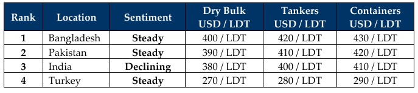

inWeekly Demolition Reports12/01/2026

If 2026 continues as it has started, we are more than likely in for another roller-coaster year full of geopolitical risks,tensions, aggravations, and increasingly frequent shocks that could affect the shipping and ship recycling industries in numerous — and as yet untold — ways.
Trump’s kidnapping (let’s call it what it is) of President Maduro and his wife from Venezuela — followed by U.S. claims that it will “run” the country when Trump can’t even handle the U.S. — has already set the tone for the madness we can expect in 2026. Amping up the octogenarian crankiness, he also threatened to take Greenland as a U.S. territory this week, drawing swift condemnation from Russia, China, and even senior Congressional Republicans on Capitol Hill, who confirmed that Congress would never agree to such overtly aggressive actions on behalf of the U.S. The subsequent capture of a Russian-controlled oil tanker carrying Venezuelan oil sent further shocks through the industry, raising the question of which other wild move this administration is willing to inflict on the world.
Markets reacted as they always do i.e. with chaos and volatility. The Baltic Exchange reported another bleak week of declines for the fifth straight Friday, falling about 1.7%, dragged down by capes (down 3%) and supramaxes (down 9 points), while panamaxes jumped about 0.7% by Friday’s close. Oil meanwhile managed to rise just about USD 59.50/barrel, extending its gain for a third consecutive session.
Currencies went on a tear once again, with the U.S. Dollar inflicting pain in Turkey and India (once again), while retreating in the Pakistani and Bangladeshi markets. Last week’s reported increase in local steel plate prices was also met with declining levels, even though the weekly moves might suggest otherwise — as current pricing remains lower than where it stood two weeks ago.
Trickling down to the ship recycling sector, while India has enjoyed a resurgent start to the year on the back of local steel plate prices that jumped nearly USD 30/Ton, this week saw local sentiment turning negative again as plate levels retreated just as rapidly. Pakistan and Bangladesh meanwhile responded in kind with improved demand and pricing of their own as activity starts to seemingly heat up ahead of the inevitable slowdown for Chinese New Year at the end of January into February and Far Eastern tonnage typically takes another break from Bangla waters. Local deliveries also showed marginal improvement, with just a couple of candidates making it to sub-continent anchorages this week.
As such, after the end-of-2025 decline in pricing, owners with vintage tonnage and surveys due may look to test the market again as levels hover around the USD 400/LDT mark, which are still strong – all things considered.
For Week 02 of 2026, GMS Market Rankings / vessel indications are as below.

📄 Download PDF: Ship-recycling-market-insight-Week-02-01-09-2026-Taught_with_Tensions.pdfSource: GMS,Inc.https://www.gmsinc.net/gms_new/index.php/web